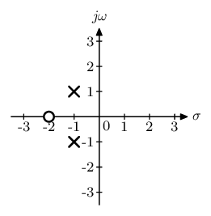

A new key-value interface for Metapost
Posted on September 7, 2019
Recently, Hans announced a new key-value driven interface for MetaFun and posted a MyWay document illustrating its use. In this post, I am going to present an example of how to use this interface.
I teach a course in Linear Systems and occasionally need to draw what is known as a pole zero plot. Here is what it looks like.
The circle denotes the location of zero and the crosses denote the location of poles. It is a relatively simple plot to draw, so I thought that this is a good candidate to show how the interface works without worrying too much on the logic of plotting. Let’s start with the bare-bones implementation. I want to draw the above plot using the following interface:
\startMPcode
draw PZplot
[
xmin = -3.5, xmax = 3.5,
ymin = -3.5, ymax = 3.5,
poles = { (-1, 1), (-1, -1) },
zeros = { (-2, 0) },
] ;
\stopMPcode
So, how do we create such a key-value driven interface. Let’s go over it step by step. All that follows in Metapost code.
The first step is to define the macro PZplot:
def PZplot = applyparameters "PZplot" "do_PZplot" enddef ;
Here applyparameters is the new
MetaFun macro which takes two string arguments. The first ("PZplot" in this case) is the name of
the data structure where the key-value pairs are stored. The second
("do_PZplot" in this case)
is the name of the MetaPost function that is called after all the key-value
pairs have been stored. This is very similar to the old style for defining
TeX macros in ConTeXt.
The second (optional) step is to set up the default values of all parameters.
presetparameters "PZplot" [
xmin = -2.5, xmax = 2.5,
ymin = -2.5, ymax = 2.5,
dx = 1, dy = 1,
sx = 5mm, sy = 5mm,
scale = 0.5,
grid = false,
poles = { },
zeros = { },
style = "\switchtobodyfont[8pt]",
];
All values must either be a valid MetaPost type (numeric, pair, string,
etc.) or a list of value MetaPost types enclosed in braces (like a Lua
table).
Finally, we can retrieve a value as follows:
xmin := getparameter "PZplot" "xmin";
The right hand side returns a metapost numeric and one has to be careful to
ensure that the variable xmin is declared a numeric beforehand.
For a list (like poles and zeros in the above macros), there are a few
other macros:
To get the number of elements in the list, use
getparametercount "PZplot" "poles"To get the say 2nd element of the list, use
getparameter "PZplot" "poles" 2
That’s it.
There are two other convenience macros. Writing the name of the data structure
"PZplot" in all the macros
can get tiring. So, one can set the name of the current data structure using
pushparameters "PZplot";
Then,
xmin := getparameter "xmin";
xmin := getparameter "PZplot" "xmin";
One can then reset the name of the default data structure using
popparameters;
The actual mechanism is more complicated than that because pushparameters can be used in a nested manner,
but I’ll ignore that and stick with the simpler explanation that I used above.
So, without further ado, here is the complete implementation of the PZplot
macro. As a mater of habit, I define and use this macro in a separate MetaPost
instance. That way, I don’t have to worry about my definitions affecting
code from other modules.
\defineMPinstance[LTI]
[
format=metafun,
extensions=yes,
initializations=yes,
method=double,
]
\startMPdefinitions{LTI}
def pole =
image(
draw (1, 1) -- (-1, -1);
draw (1, -1) -- (-1, 1);
)
enddef ;
def zero =
image(
unfill fullcircle scaled 2;
draw fullcircle scaled 2;
)
enddef;
def PZplot = applyparameters "PZplot" "do_PZplot" enddef ;
presetparameters "PZplot" [
xmin = -2.5, xmax = 2.5,
ymin = -2.5, ymax = 2.5,
dx = 1, dy = 1,
sx = 5mm, sy = 5mm,
scale = 0.5,
grid = false,
poles = { },
zeros = { },
style = "\switchtobodyfont[8pt]",
];
vardef do_PZplot =
image (
pushparameters "PZplot";
newnumeric xmin, xmax, ymin, ymax;
xmin := getparameter "xmin";
xmax := getparameter "xmax";
ymin := getparameter "ymin";
ymax := getparameter "ymax";
newnumeric sx, sy;
sx := getparameter "sx";
sy := getparameter "sy";
newnumeric dx, dy;
dx := getparameter "dx";
dy := getparameter "dy";
newpath xaxis, yaxis;
xaxis := (xmin*sx, 0) -- (xmax*sx, 0);
yaxis := (0, ymin*sy) -- (0, ymax*sy);
newpath xtick, ytick;
xtick := (-0.1sx, 0) -- (0.1sx, 0);
ytick := (0, -0.1sy) -- (0, 0.1sy);
newstring style;
style := getparameter "style";
newboolean grid;
grid := getparameter "grid";
for x = dx step dx until xmax :
if grid :
draw yaxis shifted (x*sx, 0) withcolor 0.5white;
fi
draw ytick shifted (x*sx, 0);
label.bot(style & decimal x, (x*sx, 0));
endfor
label.lrt(style & "0", origin);
for x = -dx step -dx until xmin :
if grid :
draw yaxis shifted (x*sx, 0) withcolor 0.5white;
fi
draw ytick shifted (x*sx, 0);
label.bot(style & decimal x, (x*sx, 0));
endfor
for y = dy step dy until ymax :
if grid :
draw xaxis shifted (0, y*sy) withcolor 0.5white;
fi
draw xtick shifted (0, y*sy);
label.lft(style & decimal y, (0, y*sy));
endfor
for y = -dy step -dy until ymin :
if grid :
draw xaxis shifted (0, y*sy) withcolor 0.5white;
fi
draw xtick shifted (0, y*sy);
label.lft(style & decimal y, (0, y*sy));
endfor
drawarrow xaxis;
drawarrow yaxis;
label.rt( style & "$σ$", (xmax*sx, 0));
label.top(style & "$jω$", (0, ymax*sy));
newpair p ;
newnumeric scale;
scale := getparameter "scale";
if (getparametercount "zeros") > 0 :
for i = 1 upto getparametercount "zeros":
p := getparameter "zeros" i;
draw (zero xysized(scale*sx, scale*sx))
shifted (xpart p*sx, ypart p*sy)
withpen pencircle scaled 1bp;
endfor
fi
if (getparametercount "poles") > 0 :
for i = 1 upto getparametercount "poles":
p := getparameter "poles" i;
draw (pole xysized(scale*sx, scale*sx))
shifted (xpart p*sx, ypart p*sy)
withpen pencircle scaled 1bp;
endfor
fi
popparameters;
)
enddef;
\stopMPdefinitions
\starttext
\startTEXpage[offset=2mm]
\startMPcode{LTI}
draw PZplot
[
xmin = -3.5, xmax = 3.5,
ymin = -3.5, ymax = 3.5,
poles = { (-1, 1), (-1, -1) },
zeros = { (-2, 0) },
] ;
\stopMPcode
\stopTEXpage
\stoptext
Running the code above gives the plot:
As an example of the flexibility of the key-value interface, we can get a background grid by using:
\startMPcode{LTI}
draw PZplot
[
. . .
. . .
grid = true,
] ;
\stopMPcode
I am very excited about this new key-value interface for MetaPost. For my course notes, there are many plots that I draw using TikZ because of the convenience of the key-value interface of TikZ. Now, I can draw these with MetaPost, which has the advantage of being 3-5 times faster.
This entry was posted in Metapost and tagged metapost, metafun, separating content and presentation, programming.